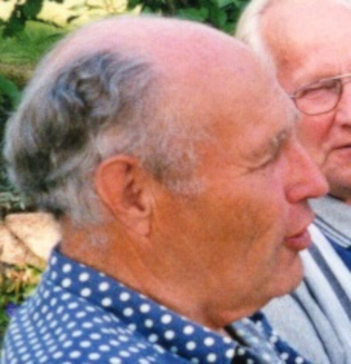

|
Född
22 maj 2005
1
.
|
|
Salina Karin Leontine Olsson
Född 22 maj 2005 1 . |
F
Roul Michael Olsson.
Född 18 mar 1967 i Norrköpings Sankt Johannes (E) 1 . |
||
|
M
Dagmar Karin Linnea Axelsson.
Född 21 dec 1969 i Sankt Laurentii (E) 2 . |
 MF Axel Inge Mauritz Axelsson.Född 6 mar 1931 i Lund, Drothem (E) 3 . Död 27 dec 2016 på Eriksviksgatan 18, Gård 7, Kv Gäddan, Söderköping, Söderköping Sankt Anna (E) 4 . |
MFF Axel Ivar Larsson. Född 17 okt 1900 i Gata, Skönberga (E) 5 . Död 17 jan 1990 i Lunds jägmästaregård, Lund, Drothem (E) 4 . |
|
|
MFM Ester Sofia Linnea Larsson f Karlsson. Född 22 apr 1909 i Snörum, Mariehov, Drothem (E) 6 . Död 5 nov 1985 i Lunds jägmästaregård, Lund, Drothem (E) 4 . |
|||
|
MM
Karin Birgitta Axelsson f Johansson.
Född 21 aug 1935 i Össby, Mogata (E) 7 . Död 28 mar 2019 på Eriksviksgatan 18, Gård 7, Kv Gäddan, Söderköping, Söderköping Sankt Anna (E) 4 . |
|||
Framställd 12 aug 2026 med hjälp av Disgen version 2025.